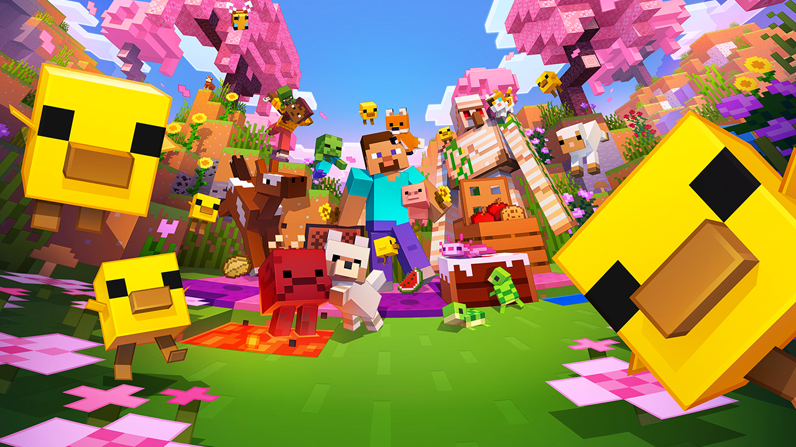
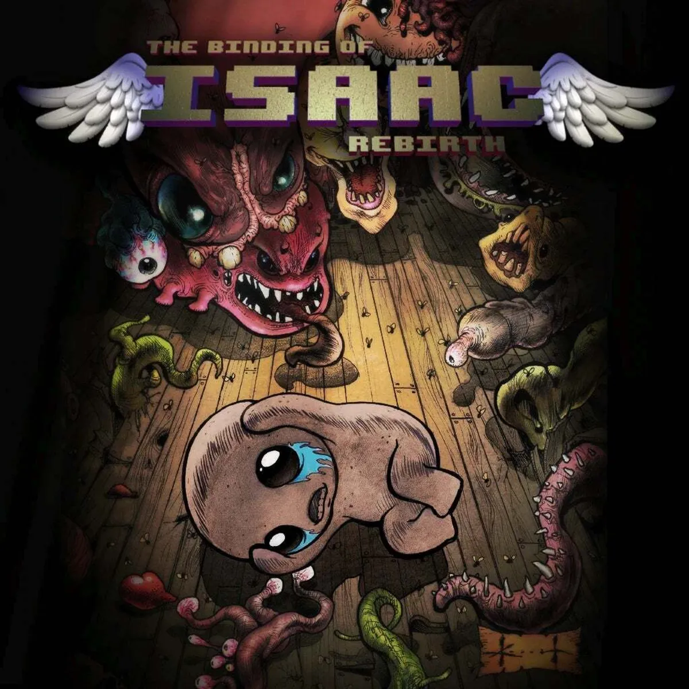
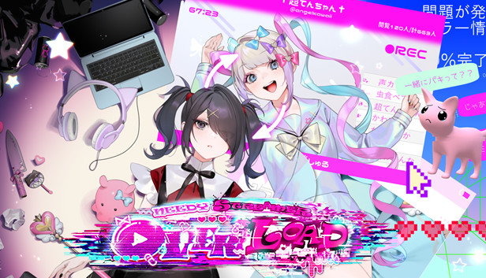
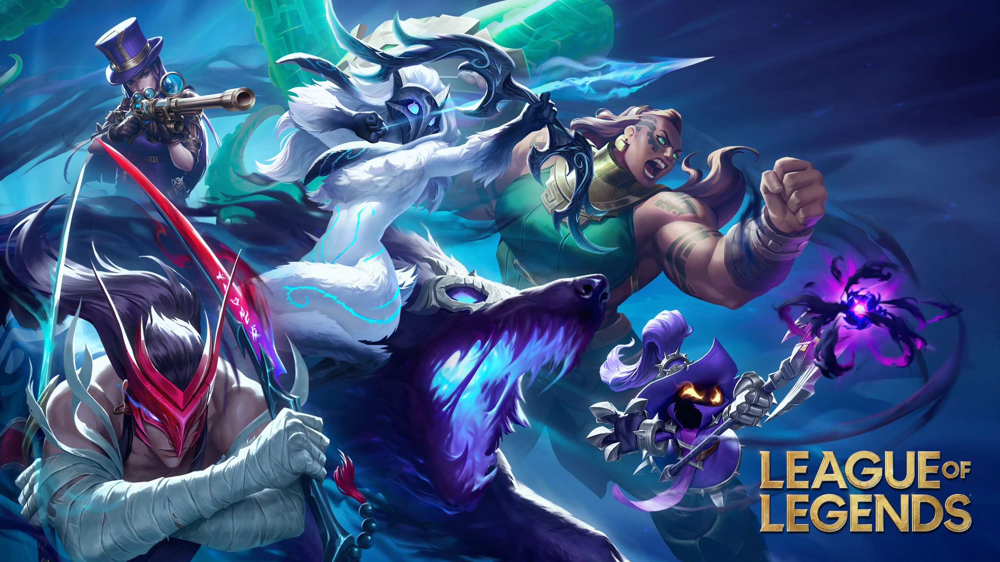

Bem vindo ao meu site pessoal.
Ele é meramente uma forma de estudo sobre HTML, CSS e JavaScript
Sobre Mim
Meu nome é Luiz Felipe Yoshida Monma
Tenho 17 anos
Estou estudando na UniFil
Gosto de jogos eletrônicos
Minecraft

Eu gosto bastante de Minecraft, é bem famoso então não vou entrar muito em detalhes, eu ainda jogo de vez em quando
mas a minha afeição pelo jogo é mais nostálgica, eu jogava muito quando era mais novo, e tem um valor sentimental para mim.
The Binding of Isaac

The Binding of Isaac é um jogo de ação e aventura com elementos de roguelike, desenvolvido por Edmund McMillen e Tommy Refenes.
Eu não joguei por tanto tempo quanto Minecraft, mas tenho sólidas 400 horas, é um jogo bem extenso de conteúdo e história,
além de ser bem desafiador (minha opinião), por ser um roguelike o jogo acaba ficando um pouco repetitivo, o que me fez
perder a vontade de jogar depoisd e um tempo, mas ainda recomendo para quem gosta de jogos desafiadores e com uma história interessante.
Needy Streamer Overload

Needy Streamer Overload é um jogo mais nichado que os outros, ele é mais baseado na simulação de uma streamer, o jogo em si
é bem simples e o foco é na leitura e interpretação do que está acontecendo na vida da streamer, por simples não tem muito
o que fazer como em jogos mundo aberto, mas ele tem uma história "interessante" e (na minha opinião) é um jogo estranho, porém
eu gostei de jogar e pegar todas as conquistas disponíveis.
Pokemon

Como Minecraft eu joguei bastante Pokemon quando era mais novo, mas como não cresci quando os mais antigos estavam em alta
acabei jogando e assistindo apenas os mais recentes como o Pokemon go e Pokemon tcg, mas ainda assim gosto bastante de franquia
e tenho boas memórias do jogo, no momento eu comecei um mundo no cobblemon (mod de Pokemon para Minecraft) e estou gostando.
Tem um jogo que eu não gosto
League of Legends

League of Legends é um jogo OK, mas eu não gosto dele por causa da comunidade tóxica, eu fiquei um tempo sem jogar
mas voltei recentemente, e para a surpresa de ninguem a comunidade continua tóxica, mas é um jogo que eu passo o tempo,
dito isso aqui vai uma lista com os campeões que eu mais joguei (não me orgulho disso):
| Campeão |
Maestria com o campeão |
| Teemo |
32 de maestria |
| Darius |
29 de maestria |
| Riven |
25 de maestria |
| Aurora |
6 de maestria |
| No momento eu estou aprendendo a jogar de Aurora |
Não gosto muito de parágrafos, então prefiro usar listas, mas para tentar cobrir tudo que o vídeo introduz
vou tentar usar esse e outros elemetos. Uma cópia do site do vídeo pode ser encontrada
aqui.